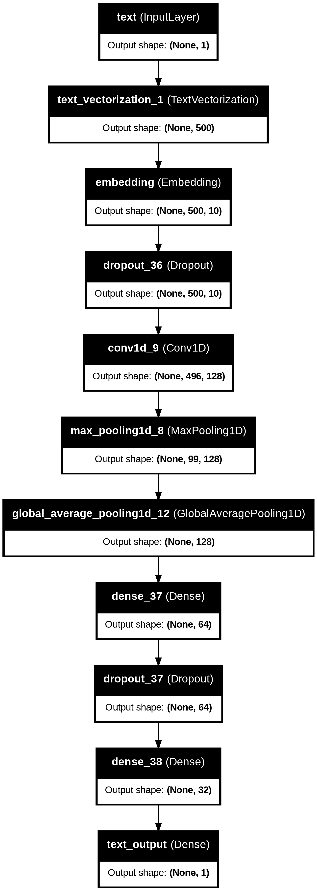

import pandas as pd
import tensorflow as tf
import tensorflow_datasets as tfds
import matplotlib.pyplot as pltIntroduction
With so much information at hand, it is hard to distinguishing the truth from lies. The rise of fake news, has blurred the lines between fact and fiction. Text classification is a powerful technique that can be used to identify fake news. These models are often called NLPs, or Natural Language Processors.
For this tutorial, we will be using data from the article:
Ahmed H, Traore I, Saad S. (2017) “Detection of Online Fake News Using N-Gram Analysis and Machine Learning Techniques. In: Traore I., Woungang I., Awad A. (eds) Intelligent, Secure, and Dependable Systems in Distributed and Cloud Environments. ISDDC 2017. Lecture Notes in Computer Science, vol 10618. Springer, Cham (pp. 127-138).
Which can be accessed through Kaggle. Each row of the data corresponds to an article with the title column giving the title of the article, and the text column giving the full article text. The fake column is 0 if the article is true and 1 if the article contains fake news.
Before writing any code we need to import some essential libraries for our data manipulation and the creation of our models. Additionally, we will need to install and install and updated version of keras.
!pip install keras --upgradeRequirement already satisfied: keras in /usr/local/lib/python3.10/dist-packages (2.15.0)
Collecting keras
Downloading keras-3.0.5-py3-none-any.whl (1.0 MB)
━━━━━━━━━━━━━━━━━━━━━━━━━━━━━━━━━━━━━━━━ 1.0/1.0 MB 12.5 MB/s eta 0:00:00
Requirement already satisfied: absl-py in /usr/local/lib/python3.10/dist-packages (from keras) (1.4.0)
Requirement already satisfied: numpy in /usr/local/lib/python3.10/dist-packages (from keras) (1.25.2)
Requirement already satisfied: rich in /usr/local/lib/python3.10/dist-packages (from keras) (13.7.1)
Collecting namex (from keras)
Downloading namex-0.0.7-py3-none-any.whl (5.8 kB)
Requirement already satisfied: h5py in /usr/local/lib/python3.10/dist-packages (from keras) (3.9.0)
Requirement already satisfied: dm-tree in /usr/local/lib/python3.10/dist-packages (from keras) (0.1.8)
Requirement already satisfied: ml-dtypes in /usr/local/lib/python3.10/dist-packages (from keras) (0.2.0)
Requirement already satisfied: markdown-it-py>=2.2.0 in /usr/local/lib/python3.10/dist-packages (from rich->keras) (3.0.0)
Requirement already satisfied: pygments<3.0.0,>=2.13.0 in /usr/local/lib/python3.10/dist-packages (from rich->keras) (2.16.1)
Requirement already satisfied: mdurl~=0.1 in /usr/local/lib/python3.10/dist-packages (from markdown-it-py>=2.2.0->rich->keras) (0.1.2)
Installing collected packages: namex, keras
Attempting uninstall: keras
Found existing installation: keras 2.15.0
Uninstalling keras-2.15.0:
Successfully uninstalled keras-2.15.0
ERROR: pip's dependency resolver does not currently take into account all the packages that are installed. This behaviour is the source of the following dependency conflicts.
tensorflow 2.15.0 requires keras<2.16,>=2.15.0, but you have keras 3.0.5 which is incompatible.
Successfully installed keras-3.0.5 namex-0.0.7Unable to display output for mime type(s): application/vnd.colab-display-data+jsonNext, we need to download our training set, using the url provided, to a pandas dataframe.
train_url = "https://github.com/PhilChodrow/PIC16b/blob/master/datasets/fake_news_train.csv?raw=true"
# Read the CSV file into a DataFrame
df = pd.read_csv(train_url)
df.head()| Unnamed: 0 | title | text | fake | |
|---|---|---|---|---|
| 0 | 17366 | Merkel: Strong result for Austria's FPO 'big c... | German Chancellor Angela Merkel said on Monday... | 0 |
| 1 | 5634 | Trump says Pence will lead voter fraud panel | WEST PALM BEACH, Fla.President Donald Trump sa... | 0 |
| 2 | 17487 | JUST IN: SUSPECTED LEAKER and “Close Confidant... | On December 5, 2017, Circa s Sara Carter warne... | 1 |
| 3 | 12217 | Thyssenkrupp has offered help to Argentina ove... | Germany s Thyssenkrupp, has offered assistance... | 0 |
| 4 | 5535 | Trump say appeals court decision on travel ban... | President Donald Trump on Thursday called the ... | 0 |
In order to clean our data for easier processing we want to remove unnecessary words like “and”, “or”, and “the” that don’t contribute much to the meaning of the text. We also want to make everything lowercase. Finally we want to put our dataframe into a tensorflow Dataset object. We can do all of this by defining a function make_dataset:
Additionally, we can easily import a list of stopwords using the snipet bellow.
import nltk
from nltk.corpus import stopwords
nltk.download('stopwords')[nltk_data] Downloading package stopwords to /root/nltk_data...
[nltk_data] Unzipping corpora/stopwords.zip.Truedef make_dataset(df):
"""
Preprocesses the input DataFrame for text classification.
Args:
- df (pd.DataFrame): DataFrame containing 'title', 'text', and 'fake' columns.
Returns:
- tf.data.Dataset: A TensorFlow Dataset containing preprocessed text and label tensors.
"""
# Make text all lowercase
df['text'] = df['text'].apply(lambda x: x.lower())
df['title'] = df['title'].apply(lambda x: x.lower())
# Remove stopwords
stop = stopwords.words('english')
df['text'] = df['text'].apply(lambda x: ' '.join([word for word in x.split() if word not in (stop)]))
df['title'] = df['title'].apply(lambda x: ' '.join([word for word in x.split() if word not in (stop)]))
# Make a tf Dataset
title_tensor = tf.constant(df['title'].values, dtype=tf.string)
text_tensor = tf.constant(df['text'].values, dtype=tf.string)
fake_tensor = tf.constant(df['fake'].values, dtype=tf.int32)
dataset = tf.data.Dataset.from_tensor_slices(({"title": title_tensor, "text": text_tensor}, fake_tensor))
# Batch the dataset
dataset = dataset.batch(100)
return datasetds = make_dataset(df)Next, we want to split the dataset into a training set and a validation set with a 80-20 ratio. We can do this by using the take and skip methods of the tensorflow Dataset object. When passed a number n, take will take only the first n items in the dataset, and skip will skip the first n items.
# Shuffle the data and determine the validation set size
ds = ds.shuffle(buffer_size = len(ds), reshuffle_each_iteration=False)
val_size = int(0.2 * len(ds))
# Split the dataset
val = ds.take(val_size)
train = ds.skip(val_size)len(train), len(val)(180, 45)In order to get a good idea of the performance of our machine learning models we can compare them to the base rate. The base rate provides a baseline understanding of the distribution of fake news. We can calculate the base rate by comparing the number of fake vs true articles.
fake_count = 0
total_count = 0
for _, labels in train:
fake_count += tf.reduce_sum(labels).numpy() # Sum of 0s and 1s where 1 represents 'fake'
total_count += len(labels)
base_rate = fake_count / total_count
print("Base rate:", base_rate)Base rate: 0.5254331717644437As we can see a random guess would have around a 52% probability of being correct in determining if an article is fake or not.
Model Creation:
We will be creating three models to determine the answer to the question: “When detecting fake news, is it most effective to focus on only the title of the article, the full text of the article, or both?” 1. A model only using the title as input. 2. A model only using the test as imput. 3. A model using both as input.
In order to answer this question we will be using the Functional API. The Functional API allows you to define models with complex multiple inputs and outputs, shared layers, and non-linear connectivity patterns. These features are essential for the three models we want to create using our dataset
To start off, understanding and representing textual data in a machine-readable format is an important initial step for text classification. We can use TextVectorization layer in TensorFlow to achieve this.
To use TextVectorization we must first import these functions.
import keras
import re
import string
from keras import layers, losses
from keras.layers import TextVectorization#preparing a text vectorization layer for tf model
size_vocabulary = 2000
def standardization(input_data):
lowercase = tf.strings.lower(input_data)
no_punctuation = tf.strings.regex_replace(lowercase,
'[%s]' % re.escape(string.punctuation),'')
return no_punctuation
vectorize_layer = TextVectorization(
standardize=standardization,
max_tokens=size_vocabulary, # only consider this many words
output_mode='int',
output_sequence_length=500)
vectorize_layer.adapt(train.map(lambda x, y: x["title"]))The standardization function within the TextVectorization layer converts text to lowercase and removes punctuation, offering a uniform representation that lessens the impact of irrelevant information in the dataset. TextVectorization also building a vocabulary from the training data. This vocabulary is limited to a specified number of tokens, providing a manageable structure to help control complexity and prevent overfitting.
shared_embedding_layer = layers.Embedding(size_vocabulary, 10, name="embedding")We also must add this embedding layer. The Embedding layer is a transformer that converts words into dense vectors, known as word embeddings. These vectors encode semantic relationships and contextual information, providing a representation of words within the vocabulary.
Both of these layers will be shared layers for both of our inputs, title and text, thanks to our use of the Functional API.
Model 1: Article Titles Only
In this TensorFlow Keras model designed for text classification, the Functional API is employed to construct a neural network architecture for discerning between real and fake news based on input titles.
The model begins with an input layer, ‘title_input,’ representing the titles of the texts and specifying what it expects for its input. The next steps involve using text vectorization, converting the titles into integer sequences using the shared vectorization layer from before. The shared embedding layer is then applied to transform these integer-encoded words into dense vectors, allowing the model to capture relationships between words.
Next, Dropout layers are strategically inserted to mitigate overfitting, and Global average pooling ensures a fixed-length output, regardless of input length for generalization. Then a series of Dense layers are used.
# Assuming you have already defined the title_input
title_input = tf.keras.Input(shape=(1,), dtype=tf.string, name="title")
# Create the model for title input
title_features = vectorize_layer(title_input)
title_features = shared_embedding_layer(title_features)
title_features = layers.Dropout(0.5)(title_features)
title_features = layers.Conv1D(128, 5, activation='relu')(title_features)
title_features = layers.MaxPooling1D(5)(title_features)
title_features = layers.GlobalAveragePooling1D()(title_features)
title_features = layers.Dense(64, activation='relu')(title_features)
title_features = layers.Dropout(0.3)(title_features)
title_features = layers.Dense(32, activation='relu')(title_features)
# Define the output layer for title input
title_output = layers.Dense(1, activation='sigmoid', name="title_output")(title_features)
# Create the model
model1 = tf.keras.Model(inputs=title_input, outputs=title_output)
model1.summary()Model: "functional_21"
┏━━━━━━━━━━━━━━━━━━━━━━━━━━━━━━━━━━━━━━┳━━━━━━━━━━━━━━━━━━━━━━━━━━━━━┳━━━━━━━━━━━━━━━━━┓ ┃ Layer (type) ┃ Output Shape ┃ Param # ┃ ┡━━━━━━━━━━━━━━━━━━━━━━━━━━━━━━━━━━━━━━╇━━━━━━━━━━━━━━━━━━━━━━━━━━━━━╇━━━━━━━━━━━━━━━━━┩ │ title (InputLayer) │ (None, 1) │ 0 │ ├──────────────────────────────────────┼─────────────────────────────┼─────────────────┤ │ text_vectorization_1 │ (None, 500) │ 0 │ │ (TextVectorization) │ │ │ ├──────────────────────────────────────┼─────────────────────────────┼─────────────────┤ │ embedding (Embedding) │ (None, 500, 10) │ 20,000 │ ├──────────────────────────────────────┼─────────────────────────────┼─────────────────┤ │ dropout_15 (Dropout) │ (None, 500, 10) │ 0 │ ├──────────────────────────────────────┼─────────────────────────────┼─────────────────┤ │ conv1d (Conv1D) │ (None, 496, 128) │ 6,528 │ ├──────────────────────────────────────┼─────────────────────────────┼─────────────────┤ │ max_pooling1d (MaxPooling1D) │ (None, 99, 128) │ 0 │ ├──────────────────────────────────────┼─────────────────────────────┼─────────────────┤ │ global_average_pooling1d_4 │ (None, 128) │ 0 │ │ (GlobalAveragePooling1D) │ │ │ ├──────────────────────────────────────┼─────────────────────────────┼─────────────────┤ │ dense_18 (Dense) │ (None, 64) │ 8,256 │ ├──────────────────────────────────────┼─────────────────────────────┼─────────────────┤ │ dropout_16 (Dropout) │ (None, 64) │ 0 │ ├──────────────────────────────────────┼─────────────────────────────┼─────────────────┤ │ dense_19 (Dense) │ (None, 32) │ 2,080 │ ├──────────────────────────────────────┼─────────────────────────────┼─────────────────┤ │ title_output (Dense) │ (None, 1) │ 33 │ └──────────────────────────────────────┴─────────────────────────────┴─────────────────┘
Total params: 36,897 (144.13 KB)
Trainable params: 36,897 (144.13 KB)
Non-trainable params: 0 (0.00 B)
The summary function can be used to view the structure of model1, but, even better, we can use the utils function as shown below. The visualization provides an overview of the model’s architecture, including the connectivity between layers, the shapes of the tensors, and the names of each layer.
from keras import utils# Visualize the structure of the model
utils.plot_model(model1, "model1.png",
show_shapes=True,
show_layer_names=True)
Finaly we can compile an fit our data to the model:
# Compile and fit the model
model1.compile(optimizer='adam', loss='binary_crossentropy', metrics=['accuracy'])
history1 = model1.fit(train, epochs=20, validation_data=val)Epoch 1/20
180/180 ━━━━━━━━━━━━━━━━━━━━ 25s 123ms/step - accuracy: 0.5228 - loss: 0.6906 - val_accuracy: 0.7187 - val_loss: 0.5513
Epoch 2/20
180/180 ━━━━━━━━━━━━━━━━━━━━ 21s 114ms/step - accuracy: 0.7714 - loss: 0.4684 - val_accuracy: 0.8996 - val_loss: 0.2606
Epoch 3/20
180/180 ━━━━━━━━━━━━━━━━━━━━ 21s 117ms/step - accuracy: 0.9065 - loss: 0.2415 - val_accuracy: 0.9213 - val_loss: 0.2036
Epoch 4/20
180/180 ━━━━━━━━━━━━━━━━━━━━ 40s 110ms/step - accuracy: 0.9260 - loss: 0.1990 - val_accuracy: 0.9244 - val_loss: 0.1949
Epoch 5/20
180/180 ━━━━━━━━━━━━━━━━━━━━ 21s 115ms/step - accuracy: 0.9326 - loss: 0.1805 - val_accuracy: 0.9229 - val_loss: 0.1925
Epoch 6/20
180/180 ━━━━━━━━━━━━━━━━━━━━ 20s 111ms/step - accuracy: 0.9416 - loss: 0.1609 - val_accuracy: 0.9247 - val_loss: 0.1885
Epoch 7/20
180/180 ━━━━━━━━━━━━━━━━━━━━ 21s 111ms/step - accuracy: 0.9438 - loss: 0.1541 - val_accuracy: 0.9271 - val_loss: 0.1850
Epoch 8/20
180/180 ━━━━━━━━━━━━━━━━━━━━ 21s 116ms/step - accuracy: 0.9455 - loss: 0.1516 - val_accuracy: 0.9296 - val_loss: 0.1830
Epoch 9/20
180/180 ━━━━━━━━━━━━━━━━━━━━ 40s 111ms/step - accuracy: 0.9480 - loss: 0.1425 - val_accuracy: 0.9313 - val_loss: 0.1792
Epoch 10/20
180/180 ━━━━━━━━━━━━━━━━━━━━ 21s 116ms/step - accuracy: 0.9519 - loss: 0.1357 - val_accuracy: 0.9289 - val_loss: 0.1821
Epoch 11/20
180/180 ━━━━━━━━━━━━━━━━━━━━ 40s 109ms/step - accuracy: 0.9543 - loss: 0.1254 - val_accuracy: 0.9322 - val_loss: 0.1754
Epoch 12/20
180/180 ━━━━━━━━━━━━━━━━━━━━ 22s 118ms/step - accuracy: 0.9530 - loss: 0.1275 - val_accuracy: 0.9340 - val_loss: 0.1755
Epoch 13/20
180/180 ━━━━━━━━━━━━━━━━━━━━ 40s 110ms/step - accuracy: 0.9571 - loss: 0.1211 - val_accuracy: 0.9320 - val_loss: 0.1767
Epoch 14/20
180/180 ━━━━━━━━━━━━━━━━━━━━ 21s 115ms/step - accuracy: 0.9573 - loss: 0.1191 - val_accuracy: 0.9331 - val_loss: 0.1750
Epoch 15/20
180/180 ━━━━━━━━━━━━━━━━━━━━ 21s 114ms/step - accuracy: 0.9616 - loss: 0.1112 - val_accuracy: 0.9362 - val_loss: 0.1729
Epoch 16/20
180/180 ━━━━━━━━━━━━━━━━━━━━ 20s 109ms/step - accuracy: 0.9613 - loss: 0.1101 - val_accuracy: 0.9342 - val_loss: 0.1757
Epoch 17/20
180/180 ━━━━━━━━━━━━━━━━━━━━ 22s 115ms/step - accuracy: 0.9577 - loss: 0.1153 - val_accuracy: 0.9349 - val_loss: 0.1740
Epoch 18/20
180/180 ━━━━━━━━━━━━━━━━━━━━ 21s 114ms/step - accuracy: 0.9602 - loss: 0.1106 - val_accuracy: 0.9376 - val_loss: 0.1740
Epoch 19/20
180/180 ━━━━━━━━━━━━━━━━━━━━ 41s 111ms/step - accuracy: 0.9625 - loss: 0.1020 - val_accuracy: 0.9371 - val_loss: 0.1734
Epoch 20/20
180/180 ━━━━━━━━━━━━━━━━━━━━ 21s 118ms/step - accuracy: 0.9625 - loss: 0.1033 - val_accuracy: 0.9344 - val_loss: 0.1776In the visualization below, we can see the results of our training in a better format. As we can see, the model achieves a validation accuracy average around 93.5% using only the titles of the articles as input. Below, you can see that there is some overfitting of the model.
# Visualize the results of the training using matplotlib
plt.plot(history1.history['accuracy'], label='Training Accuracy')
plt.plot(history1.history['val_accuracy'], label='Validation Accuracy')
plt.xlabel('Epochs')
plt.ylabel('Accuracy')
plt.title('Model 1: Titles')
plt.legend()
plt.show()
Model 2: Article Text Only
Using the same structure of layers for the second model but using the article text instead, we can further determine the answer to our question.
# Create the input layer for the article text
text_input = tf.keras.Input(shape=(1,), dtype=tf.string, name="text")
# Create the model for text input
text_features = vectorize_layer(text_input)
text_features = shared_embedding_layer(text_features)
text_features = layers.Dropout(0.5)(text_features)
text_features = layers.Conv1D(128, 5, activation='relu')(text_features)
text_features = layers.MaxPooling1D(5)(text_features)
text_features = layers.GlobalAveragePooling1D()(text_features)
text_features = layers.Dense(64, activation='relu')(text_features)
text_features = layers.Dropout(0.3)(text_features)
text_features = layers.Dense(32, activation='relu')(text_features)
# Create the text_output final layer
text_output = layers.Dense(1, activation='sigmoid', name="text_output")(text_features)
model2 = tf.keras.Model(inputs=text_input, outputs=text_output)
model2.summary()Model: "functional_41"
┏━━━━━━━━━━━━━━━━━━━━━━━━━━━━━━━━━━━━━━┳━━━━━━━━━━━━━━━━━━━━━━━━━━━━━┳━━━━━━━━━━━━━━━━━┓ ┃ Layer (type) ┃ Output Shape ┃ Param # ┃ ┡━━━━━━━━━━━━━━━━━━━━━━━━━━━━━━━━━━━━━━╇━━━━━━━━━━━━━━━━━━━━━━━━━━━━━╇━━━━━━━━━━━━━━━━━┩ │ text (InputLayer) │ (None, 1) │ 0 │ ├──────────────────────────────────────┼─────────────────────────────┼─────────────────┤ │ text_vectorization_1 │ (None, 500) │ 0 │ │ (TextVectorization) │ │ │ ├──────────────────────────────────────┼─────────────────────────────┼─────────────────┤ │ embedding (Embedding) │ (None, 500, 10) │ 20,000 │ ├──────────────────────────────────────┼─────────────────────────────┼─────────────────┤ │ dropout_36 (Dropout) │ (None, 500, 10) │ 0 │ ├──────────────────────────────────────┼─────────────────────────────┼─────────────────┤ │ conv1d_9 (Conv1D) │ (None, 496, 128) │ 6,528 │ ├──────────────────────────────────────┼─────────────────────────────┼─────────────────┤ │ max_pooling1d_8 (MaxPooling1D) │ (None, 99, 128) │ 0 │ ├──────────────────────────────────────┼─────────────────────────────┼─────────────────┤ │ global_average_pooling1d_12 │ (None, 128) │ 0 │ │ (GlobalAveragePooling1D) │ │ │ ├──────────────────────────────────────┼─────────────────────────────┼─────────────────┤ │ dense_37 (Dense) │ (None, 64) │ 8,256 │ ├──────────────────────────────────────┼─────────────────────────────┼─────────────────┤ │ dropout_37 (Dropout) │ (None, 64) │ 0 │ ├──────────────────────────────────────┼─────────────────────────────┼─────────────────┤ │ dense_38 (Dense) │ (None, 32) │ 2,080 │ ├──────────────────────────────────────┼─────────────────────────────┼─────────────────┤ │ text_output (Dense) │ (None, 1) │ 33 │ └──────────────────────────────────────┴─────────────────────────────┴─────────────────┘
Total params: 36,897 (144.13 KB)
Trainable params: 36,897 (144.13 KB)
Non-trainable params: 0 (0.00 B)
# Visualize the structure of the model
utils.plot_model(model2, "model2.png",
show_shapes=True,
show_layer_names=True)
Now we compile and fit the model to the training data:
# Compile and fit the model
model2.compile(optimizer='adam', loss='binary_crossentropy', metrics=['accuracy'])
history2 = model2.fit(train, epochs=20, validation_data=val)Epoch 1/20
180/180 ━━━━━━━━━━━━━━━━━━━━ 73s 192ms/step - accuracy: 0.8695 - loss: 0.3665 - val_accuracy: 0.9636 - val_loss: 0.1192
Epoch 2/20
180/180 ━━━━━━━━━━━━━━━━━━━━ 37s 205ms/step - accuracy: 0.9802 - loss: 0.0599 - val_accuracy: 0.9724 - val_loss: 0.1042
Epoch 3/20
180/180 ━━━━━━━━━━━━━━━━━━━━ 32s 180ms/step - accuracy: 0.9892 - loss: 0.0372 - val_accuracy: 0.9711 - val_loss: 0.0961
Epoch 4/20
180/180 ━━━━━━━━━━━━━━━━━━━━ 31s 172ms/step - accuracy: 0.9901 - loss: 0.0293 - val_accuracy: 0.9711 - val_loss: 0.1045
Epoch 5/20
180/180 ━━━━━━━━━━━━━━━━━━━━ 34s 135ms/step - accuracy: 0.9924 - loss: 0.0253 - val_accuracy: 0.9727 - val_loss: 0.1057
Epoch 6/20
180/180 ━━━━━━━━━━━━━━━━━━━━ 25s 138ms/step - accuracy: 0.9914 - loss: 0.0253 - val_accuracy: 0.9707 - val_loss: 0.1118
Epoch 7/20
180/180 ━━━━━━━━━━━━━━━━━━━━ 40s 135ms/step - accuracy: 0.9927 - loss: 0.0234 - val_accuracy: 0.9738 - val_loss: 0.1129
Epoch 8/20
180/180 ━━━━━━━━━━━━━━━━━━━━ 24s 133ms/step - accuracy: 0.9933 - loss: 0.0203 - val_accuracy: 0.9724 - val_loss: 0.1163
Epoch 9/20
180/180 ━━━━━━━━━━━━━━━━━━━━ 25s 138ms/step - accuracy: 0.9934 - loss: 0.0233 - val_accuracy: 0.9740 - val_loss: 0.1184
Epoch 10/20
180/180 ━━━━━━━━━━━━━━━━━━━━ 24s 134ms/step - accuracy: 0.9931 - loss: 0.0228 - val_accuracy: 0.9731 - val_loss: 0.1091
Epoch 11/20
180/180 ━━━━━━━━━━━━━━━━━━━━ 41s 132ms/step - accuracy: 0.9933 - loss: 0.0208 - val_accuracy: 0.9742 - val_loss: 0.1131
Epoch 12/20
180/180 ━━━━━━━━━━━━━━━━━━━━ 42s 137ms/step - accuracy: 0.9925 - loss: 0.0226 - val_accuracy: 0.9731 - val_loss: 0.1216
Epoch 13/20
180/180 ━━━━━━━━━━━━━━━━━━━━ 26s 143ms/step - accuracy: 0.9933 - loss: 0.0226 - val_accuracy: 0.9733 - val_loss: 0.1089
Epoch 14/20
180/180 ━━━━━━━━━━━━━━━━━━━━ 25s 136ms/step - accuracy: 0.9921 - loss: 0.0242 - val_accuracy: 0.9722 - val_loss: 0.1263
Epoch 15/20
180/180 ━━━━━━━━━━━━━━━━━━━━ 41s 137ms/step - accuracy: 0.9911 - loss: 0.0249 - val_accuracy: 0.9704 - val_loss: 0.1212
Epoch 16/20
180/180 ━━━━━━━━━━━━━━━━━━━━ 44s 153ms/step - accuracy: 0.9943 - loss: 0.0202 - val_accuracy: 0.9716 - val_loss: 0.1027
Epoch 17/20
180/180 ━━━━━━━━━━━━━━━━━━━━ 38s 136ms/step - accuracy: 0.9947 - loss: 0.0194 - val_accuracy: 0.9722 - val_loss: 0.1183
Epoch 18/20
180/180 ━━━━━━━━━━━━━━━━━━━━ 42s 139ms/step - accuracy: 0.9935 - loss: 0.0217 - val_accuracy: 0.9722 - val_loss: 0.1279
Epoch 19/20
180/180 ━━━━━━━━━━━━━━━━━━━━ 42s 147ms/step - accuracy: 0.9929 - loss: 0.0210 - val_accuracy: 0.9740 - val_loss: 0.1233
Epoch 20/20
180/180 ━━━━━━━━━━━━━━━━━━━━ 40s 143ms/step - accuracy: 0.9940 - loss: 0.0184 - val_accuracy: 0.9704 - val_loss: 0.1188As we can see bellow, this model achieves a better validation accuracy average than model1, at around 97.3%. This is probably because there is more information given by the article text than from the title, so more relationships between words can be determined. Additionally, there is once again some overfitting since adding another dropout layers increased the overfitting.
plt.plot(history2.history['accuracy'], label='Training Accuracy')
plt.plot(history2.history['val_accuracy'], label='Validation Accuracy')
plt.xlabel('Epochs')
plt.ylabel('Accuracy')
plt.title('Model 2: Texts')
plt.legend()
plt.show()Model 3: Article Title and Text
Finally, we will use both the title and text in this model. Since we are using Functional API, we can use the layers we created for each input in the previous models and combine them for this model using a concatinate layer as shown below:
main = layers.concatenate([title_features, text_features], axis = 1)In order to prevent overfitting and to stabalize the model I have added some more Dense and Dropout layers:
main = layers.Dense(32, activation='relu')(main)
main = layers.Dropout(0.5)(main)
output = layers.Dense(1, name = "fake")(main)Then, we define the model with both the title input and text input:
model3 = keras.Model(
inputs = [title_input, text_input],
outputs = output
)
model3.summary()Model: "functional_43"
┏━━━━━━━━━━━━━━━━━━━━━━━━━━━┳━━━━━━━━━━━━━━━━━━━━━━━━┳━━━━━━━━━━━━━━━━┳━━━━━━━━━━━━━━━━━━━━━━━━┓ ┃ Layer (type) ┃ Output Shape ┃ Param # ┃ Connected to ┃ ┡━━━━━━━━━━━━━━━━━━━━━━━━━━━╇━━━━━━━━━━━━━━━━━━━━━━━━╇━━━━━━━━━━━━━━━━╇━━━━━━━━━━━━━━━━━━━━━━━━┩ │ title (InputLayer) │ (None, 1) │ 0 │ - │ ├───────────────────────────┼────────────────────────┼────────────────┼────────────────────────┤ │ text (InputLayer) │ (None, 1) │ 0 │ - │ ├───────────────────────────┼────────────────────────┼────────────────┼────────────────────────┤ │ text_vectorization_1 │ (None, 500) │ 0 │ title[0][0], │ │ (TextVectorization) │ │ │ text[0][0] │ ├───────────────────────────┼────────────────────────┼────────────────┼────────────────────────┤ │ embedding (Embedding) │ (None, 500, 10) │ 20,000 │ text_vectorization_1[… │ │ │ │ │ text_vectorization_1[… │ ├───────────────────────────┼────────────────────────┼────────────────┼────────────────────────┤ │ dropout_15 (Dropout) │ (None, 500, 10) │ 0 │ embedding[0][0] │ ├───────────────────────────┼────────────────────────┼────────────────┼────────────────────────┤ │ dropout_36 (Dropout) │ (None, 500, 10) │ 0 │ embedding[9][0] │ ├───────────────────────────┼────────────────────────┼────────────────┼────────────────────────┤ │ conv1d (Conv1D) │ (None, 496, 128) │ 6,528 │ dropout_15[0][0] │ ├───────────────────────────┼────────────────────────┼────────────────┼────────────────────────┤ │ conv1d_9 (Conv1D) │ (None, 496, 128) │ 6,528 │ dropout_36[0][0] │ ├───────────────────────────┼────────────────────────┼────────────────┼────────────────────────┤ │ max_pooling1d │ (None, 99, 128) │ 0 │ conv1d[0][0] │ │ (MaxPooling1D) │ │ │ │ ├───────────────────────────┼────────────────────────┼────────────────┼────────────────────────┤ │ max_pooling1d_8 │ (None, 99, 128) │ 0 │ conv1d_9[0][0] │ │ (MaxPooling1D) │ │ │ │ ├───────────────────────────┼────────────────────────┼────────────────┼────────────────────────┤ │ global_average_pooling1d… │ (None, 128) │ 0 │ max_pooling1d[0][0] │ │ (GlobalAveragePooling1D) │ │ │ │ ├───────────────────────────┼────────────────────────┼────────────────┼────────────────────────┤ │ global_average_pooling1d… │ (None, 128) │ 0 │ max_pooling1d_8[0][0] │ │ (GlobalAveragePooling1D) │ │ │ │ ├───────────────────────────┼────────────────────────┼────────────────┼────────────────────────┤ │ dense_18 (Dense) │ (None, 64) │ 8,256 │ global_average_poolin… │ ├───────────────────────────┼────────────────────────┼────────────────┼────────────────────────┤ │ dense_37 (Dense) │ (None, 64) │ 8,256 │ global_average_poolin… │ ├───────────────────────────┼────────────────────────┼────────────────┼────────────────────────┤ │ dropout_16 (Dropout) │ (None, 64) │ 0 │ dense_18[0][0] │ ├───────────────────────────┼────────────────────────┼────────────────┼────────────────────────┤ │ dropout_37 (Dropout) │ (None, 64) │ 0 │ dense_37[0][0] │ ├───────────────────────────┼────────────────────────┼────────────────┼────────────────────────┤ │ dense_19 (Dense) │ (None, 32) │ 2,080 │ dropout_16[0][0] │ ├───────────────────────────┼────────────────────────┼────────────────┼────────────────────────┤ │ dense_38 (Dense) │ (None, 32) │ 2,080 │ dropout_37[0][0] │ ├───────────────────────────┼────────────────────────┼────────────────┼────────────────────────┤ │ concatenate_8 │ (None, 64) │ 0 │ dense_19[0][0], │ │ (Concatenate) │ │ │ dense_38[0][0] │ ├───────────────────────────┼────────────────────────┼────────────────┼────────────────────────┤ │ dense_39 (Dense) │ (None, 32) │ 2,080 │ concatenate_8[0][0] │ ├───────────────────────────┼────────────────────────┼────────────────┼────────────────────────┤ │ dropout_38 (Dropout) │ (None, 32) │ 0 │ dense_39[0][0] │ ├───────────────────────────┼────────────────────────┼────────────────┼────────────────────────┤ │ fake (Dense) │ (None, 1) │ 33 │ dropout_38[0][0] │ └───────────────────────────┴────────────────────────┴────────────────┴────────────────────────┘
Total params: 55,841 (218.13 KB)
Trainable params: 55,841 (218.13 KB)
Non-trainable params: 0 (0.00 B)
Through this visualization of the model architecture, we can see how Functional API implements the layers of the different imputs and finally combines everything using the concatinatelayer. This visualization really highlights the advantiges of using Functional API to create an complex neural network.
utils.plot_model(model3, "model3.png",
show_shapes=True,
show_layer_names=True,
rankdir='LR') # output it left to right because does not output otherwise because of complexity
Next, we can compile and fit the model to the training data:
model3.compile(optimizer='adam', loss='binary_crossentropy', metrics=['accuracy'])
history3 = model3.fit(train, epochs=20, validation_data=val)Epoch 1/20
180/180 ━━━━━━━━━━━━━━━━━━━━ 49s 250ms/step - accuracy: 0.9180 - loss: 0.8561 - val_accuracy: 0.9660 - val_loss: 0.4228
Epoch 2/20
180/180 ━━━━━━━━━━━━━━━━━━━━ 81s 244ms/step - accuracy: 0.9904 - loss: 0.0998 - val_accuracy: 0.9684 - val_loss: 0.4066
Epoch 3/20
180/180 ━━━━━━━━━━━━━━━━━━━━ 83s 250ms/step - accuracy: 0.9848 - loss: 0.1587 - val_accuracy: 0.9724 - val_loss: 0.3130
Epoch 4/20
180/180 ━━━━━━━━━━━━━━━━━━━━ 81s 243ms/step - accuracy: 0.9897 - loss: 0.0756 - val_accuracy: 0.9673 - val_loss: 0.4252
Epoch 5/20
180/180 ━━━━━━━━━━━━━━━━━━━━ 80s 233ms/step - accuracy: 0.9862 - loss: 0.1294 - val_accuracy: 0.9749 - val_loss: 0.2787
Epoch 6/20
180/180 ━━━━━━━━━━━━━━━━━━━━ 42s 233ms/step - accuracy: 0.9941 - loss: 0.0418 - val_accuracy: 0.9736 - val_loss: 0.3162
Epoch 7/20
180/180 ━━━━━━━━━━━━━━━━━━━━ 87s 262ms/step - accuracy: 0.9907 - loss: 0.0670 - val_accuracy: 0.9704 - val_loss: 0.2943
Epoch 8/20
180/180 ━━━━━━━━━━━━━━━━━━━━ 78s 240ms/step - accuracy: 0.9934 - loss: 0.0567 - val_accuracy: 0.9733 - val_loss: 0.2928
Epoch 9/20
180/180 ━━━━━━━━━━━━━━━━━━━━ 82s 240ms/step - accuracy: 0.9949 - loss: 0.0374 - val_accuracy: 0.9667 - val_loss: 0.3318
Epoch 10/20
180/180 ━━━━━━━━━━━━━━━━━━━━ 82s 240ms/step - accuracy: 0.9922 - loss: 0.0568 - val_accuracy: 0.9716 - val_loss: 0.3410
Epoch 11/20
180/180 ━━━━━━━━━━━━━━━━━━━━ 43s 238ms/step - accuracy: 0.9946 - loss: 0.0410 - val_accuracy: 0.9756 - val_loss: 0.2609
Epoch 12/20
180/180 ━━━━━━━━━━━━━━━━━━━━ 82s 236ms/step - accuracy: 0.9728 - loss: 0.1577 - val_accuracy: 0.9724 - val_loss: 0.2557
Epoch 13/20
180/180 ━━━━━━━━━━━━━━━━━━━━ 84s 244ms/step - accuracy: 0.9817 - loss: 0.1109 - val_accuracy: 0.9744 - val_loss: 0.1485
Epoch 14/20
180/180 ━━━━━━━━━━━━━━━━━━━━ 83s 252ms/step - accuracy: 0.9838 - loss: 0.0637 - val_accuracy: 0.9727 - val_loss: 0.2564
Epoch 15/20
180/180 ━━━━━━━━━━━━━━━━━━━━ 82s 255ms/step - accuracy: 0.9893 - loss: 0.0625 - val_accuracy: 0.9731 - val_loss: 0.2256
Epoch 16/20
180/180 ━━━━━━━━━━━━━━━━━━━━ 80s 243ms/step - accuracy: 0.9925 - loss: 0.0436 - val_accuracy: 0.9749 - val_loss: 0.2388
Epoch 17/20
180/180 ━━━━━━━━━━━━━━━━━━━━ 83s 246ms/step - accuracy: 0.9903 - loss: 0.0434 - val_accuracy: 0.9738 - val_loss: 0.2468
Epoch 18/20
180/180 ━━━━━━━━━━━━━━━━━━━━ 45s 250ms/step - accuracy: 0.9932 - loss: 0.0275 - val_accuracy: 0.9760 - val_loss: 0.2479
Epoch 19/20
180/180 ━━━━━━━━━━━━━━━━━━━━ 44s 243ms/step - accuracy: 0.9931 - loss: 0.0347 - val_accuracy: 0.9751 - val_loss: 0.2711
Epoch 20/20
180/180 ━━━━━━━━━━━━━━━━━━━━ 46s 257ms/step - accuracy: 0.9940 - loss: 0.0421 - val_accuracy: 0.9747 - val_loss: 0.2884As we can see through the visualization, this model has an average validation accuracy of around 97.4%. This is better than both of the validation accuracies of model1 and model2, but it seems less stable than model2 as it fluctuates more between epochs.
plt.plot(history3.history['accuracy'], label='Training Accuracy')
plt.plot(history3.history['val_accuracy'], label='Validation Accuracy')
plt.xlabel('Epochs')
plt.ylabel('Accuracy')
plt.title('Model 1: Titles')
plt.legend()
plt.show()
Testing on the Best Model:
As we concluded above, model3 has the best average validation accuracy at the end, but model 2 is more stable. For now, we will only use model3 to evaluate the test data.
First, we need to dowload the test data and put it into the proper format using the make_dataset function we defined previously.
test_url = "https://github.com/PhilChodrow/PIC16b/blob/master/datasets/fake_news_test.csv?raw=true"
# Read the CSV file into a DataFrame
df_test = pd.read_csv(test_url)
df_test.head()| Unnamed: 0 | title | text | fake | |
|---|---|---|---|---|
| 0 | 420 | CNN And MSNBC Destroy Trump, Black Out His Fa... | Donald Trump practically does something to cri... | 1 |
| 1 | 14902 | Exclusive: Kremlin tells companies to deliver ... | The Kremlin wants good news. The Russian lead... | 0 |
| 2 | 322 | Golden State Warriors Coach Just WRECKED Trum... | On Saturday, the man we re forced to call Pre... | 1 |
| 3 | 16108 | Putin opens monument to Stalin's victims, diss... | President Vladimir Putin inaugurated a monumen... | 0 |
| 4 | 10304 | BREAKING: DNC HACKER FIRED For Bank Fraud…Blam... | Apparently breaking the law and scamming the g... | 1 |
test_ds = make_dataset(df_test)Next we can evaluate the test data using the model. As can be seen below, it achieves an accuracy of 97.37% similar to the average of the validation accuracy.
test_loss, test_accuracy = model3.evaluate(test_ds)
print(f'Test Accuracy: {test_accuracy * 100:.2f}%')225/225 ━━━━━━━━━━━━━━━━━━━━ 14s 62ms/step - accuracy: 0.9737 - loss: 0.3040
Test Accuracy: 97.46%Visualize Embedding:
Finally, we want to visualize the embedding done by our shared embedding layer in our model3. This will give us insight into the relationship our model determines between words in the vocabulary.
In order to visualize this we can use sklearn’s PCA, Principal Component Analysis. PCA transform a dataset with correlated features into a new set of uncorrelated features, known as principal components. These principal components are linear combinations of the original features and are ordered by the amount of variance they explain in the data.
weights = model3.get_layer('embedding').get_weights()[0] # get the weights from the embedding layer
vocab = vectorize_layer.get_vocabulary() # get the vocabulary from our data prep for later
from sklearn.decomposition import PCA
pca = PCA(n_components=2)
weights = pca.fit_transform(weights)
embedding_df = pd.DataFrame({
'word' : vocab,
'x0' : weights[:,0],
'x1' : weights[:,1]
})Then, we can use a plotly scatterplot to visualize these relationships:
import plotly.express as px
import numpy as np
fig = px.scatter(embedding_df,
x = "x0",
y = "x1",
size = list(np.ones(len(embedding_df))),
size_max = 5,
hover_name = "word",
title='Word Embeddings Visualization')
fig.update_layout(
xaxis=dict(title='Principal Component 1'),
yaxis=dict(title='Principal Component 2'),
)
fig.show()In the visualization, words that are close together might have similar semantic meanings or play a significant role in distinguishing between real and fake news. For example, “god,” “elections,” and “donald” are all closely grouped on the lower half of the center vertical axis and “gay,” “transgender,” and “democrat” are grouped near the center on the horizontal axis which might suggest that the model might classify them as having similar semantic meanings. These are often topics that are grouped together because of the political meanings they are associated with, so it would not be surprising if these are often found in articles together.
Conclusion:
In conclusion, natural language processors and text classification can be a powerful tool for determining if an article contains fake news or not. Model3 resulted in a 97.46% test accuracy using both the article title and the article text. This was achieved by using Functional API features such as shared layers and multiple inputs and by using embeding and word processing to define the semantic relationships between different words.